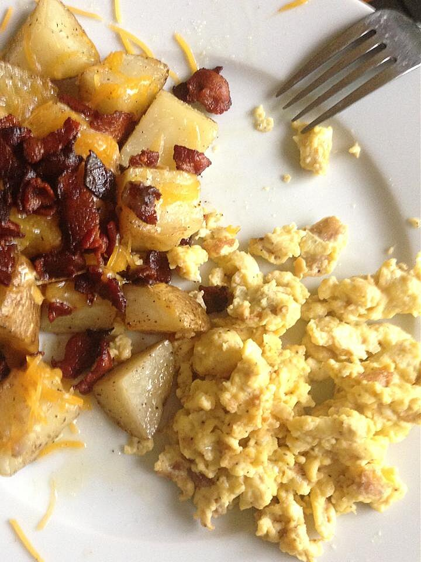

Breakfast Potatoes

These breakfast potatoes almost made me want to make another batch they were so good! Serve with scrambled eggs.
Ingredients
- 4 medium russet potatoes
- 1 onion, roughly chopped
- 2 tablespoons olive oil
- 1 tablespoon ground cumin
- 1 pinch salt and ground black pepper to taste
- 1/4 cup butter, cut into 4 pieces
- 4 slices bacon
- 1/4 cup shredded sharp cheddar cheese
Recipe
- Preheat the oven to 350 degrees F (175 degrees C).
- Cut potatoes into fourths and place in a large bowl with onion. Add olive oil, cumin, salt, and pepper; toss to coat. Cover with plastic wrap and place in the refrigerator until oven is preheated.
- Spread potato-onion mixture in an even layer on a baking sheet. Place butter on top of the potatoes, 1 piece at each corner.
- Bake in the preheated oven until potatoes are tender, about 30 minutes.
- While potatoes are baking, cook bacon in a skillet over medium heat, stirring frequently, until evenly browned, 10 to 12 minutes. Remove to a paper towel-lined plate to drain.
- Transfer cooked potatoes to a serving platter. Top with Cheddar cheese and bacon.